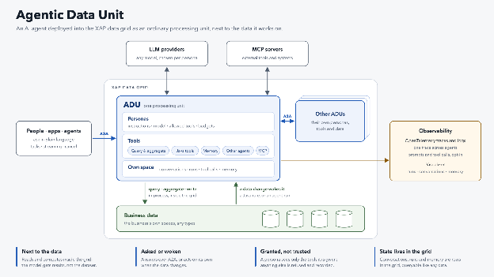

ADU might require a different license in newer versions.
Reference examples: gs-home/examples/ADU
An Agentic Data Unit (ADU) is a GigaSpaces Processing Unit (PU) that embeds an autonomous AI agent directly inside the in-memory data grid, alongside the data it operates on. Instead of treating AI agents as external services that pull datasets over the network, an ADU executes indexed queries and processing directly against the grid. It also persists its entire operational state, as conversations, runs, transcripts, tool calls, and memory, inside its own embedded Space. An ADU is a new, advanced type of stateful PU.
An ADU is built from seven parts:
Personas. An agent identity with its instructions, model, allowed tools, and limits on model round trips and tool calls. A tool that a persona does not list is never offered to it.
Tools. Space tools built into the unit (for example, space_query and space_aggregate), memory tools (Remember and Recall), your own Java tools, and peer-agent tools.
Watches. React to a change in a Space, filtered by a where clause and an operation (write or update). The handler is either plain Java (no model) or a persona (the model decides).
An A2A server. Publishes an agent card and answers SendMessage, GetTask, CancelTask, and SendStreamingMessage.
Peers. A unit can call another agent over A2A and use the answer.
Models. Declared as adu.llm.<id>.*. A persona names the model it uses. The smoke model answers with one fixed sentence and needs no key, which is useful for testing the wiring.
Embedded Space. Holds the data related to the agent's activities: conversations, runs, memory, and notes. Business data lives in a separate Space.
Use an ADU when the agent should answer or process data that lives in the grid, when a data change needs either a judgement (a model) or a deterministic reaction (Java), or when interaction with other agents is required. A unit that only reacts with Java needs no model at all and can use the A2A protocol.
ADUs react in real time via two primary triggers:
Data-Driven Triggers: State mutations, that is, changes inside the in-memory data grid, can automatically wake the ADU.
External Agent Requests: Calls routed over the standard Agent-to-Agent (A2A) protocol allow external multi-agent systems to invoke the unit.

An AduWatch monitors a reference Space for matching operations (write, update, take), filtered by a SQL where clause. Every watch binds to either a deterministic Java handler or a non-deterministic persona handler.
This handler executes Java code directly in response to a Space event, with built-in support for pushing notifications to external agents over A2A. Use dispatch="inline" for fast execution on the calling thread, or dispatch="queued" for a separate thread pool.
<bean id="order-cancelled" class="com.gigaspaces.adu.AduWatch">
<property name="gigaSpace" ref="orderSpace"/>
<property name="type" value="com.gigaspaces.example.adu.core.Order"/>
<property name="where" value="status = 'CANCELLED'"/>
<property name="operations" value="update"/>
<property name="handler" value="noteTheCancellation"/>
<property name="dispatch" value="inline"/>
</bean>
The handler must implement the AduChangeHandler interface:
void handle(AduChange change);
This handler delegates the Space event to an AduPersona. Set persona instead of handler, and dispatch asynchronously via queued.
<bean id="large-order" class="com.gigaspaces.adu.AduWatch">
<property name="gigaSpace" ref="orderSpace"/>
<property name="type" value="com.gigaspaces.example.adu.core.Order"/>
<property name="where" value="status = 'NEW' AND amount > 10000"/>
<property name="operations" value="write"/>
<property name="persona" value="reviewer"/>
<property name="dispatch" value="queued"/>
</bean>
An AduPersona encapsulates an agent's role, instructions, model reference (llm), allowed tools, and execution guardrails (maxModelRoundTrips and maxToolCalls). If a persona references a tool name that does not match any declared tool, deployment fails at startup.
ADU personas can invoke tools from four sources:
Built-in Space and Memory Tools: space_query, space_aggregate, Remember, and Recall.
Custom Java Tools: Defined as AduTool beans (with AduParam parameter definitions) backed by classes that implement AduToolBody.
MCP Server Integrations: Configured by placing an mcp.json file alongside pu.xml and referencing the desired tools in the persona declaration.
Peer Agent Tools: External A2A agents exposed as callable tools via their configured alias or advertised skills.
Example persona:
<bean class="com.gigaspaces.adu.AduPersona">
<property name="id" value="reviewer"/>
<property name="displayName" value="The Order Reviewer"/>
<property name="llm" value="review"/>
<property name="tools" value="MarkReviewed,Remember"/>
<property name="maxModelRoundTrips" value="8"/>
<property name="maxToolCalls" value="6"/>
<property name="instructions">
<value>
You review one large order at a time, inside the data grid it lives in.
The message you are given already carries everything about the order, and what
you remember about its customer is already listed above. Two things to do, in
this order:
1. Record the review of the order, once. If the memories listed above already
name this customer, begin the finding with "Repeat customer:"; if none of them
does, begin it with "First order:". Name the amount and the customer in the
same sentence.
2. Remember the customer, with the customer's name in lower case as the memory
id — so a second order from the same customer updates one memory instead of
making another — and the order id and amount in the body.
Then answer with that same finding. Answering before the customer is remembered
leaves the next order from this customer unrecognisable, which is the one thing
this review exists to do.
</value>
</property>
</bean>
Example tool:
<bean class="com.gigaspaces.adu.AduTool">
<property name="name" value="MarkReviewed"/>
<property name="description">
<value>
Records that one order has been reviewed: writes the finding as a note against
the order and moves the order to REVIEWED. Call it once per order, after you
have read the order itself. It is safe to call on an order that is already
reviewed, which it will say.
</value>
</property>
<property name="params">
<map>
<entry key="orderId">
<bean class="com.gigaspaces.adu.AduParam">
<property name="description" value="the order's id, such as o-1"/>
<property name="required" value="true"/>
</bean>
</entry>
<entry key="finding">
<!--
The format is stated HERE as well as in the persona's instructions, and
that is not duplication: the instructions are read once at the top of the
turn, and this is read at the moment the argument is written. A rule about
the shape of a value belongs beside the value.
-->
<bean class="com.gigaspaces.adu.AduParam">
<property name="description">
<value>
One sentence, recorded as the note. It must begin with "Repeat
customer:" if an earlier order of this customer is remembered,
or with "First order:" if it is not, and then name the amount
and the customer.
</value>
</property>
<property name="required" value="true"/>
</bean>
</entry>
</map>
</property>
<!--
The body writes to the orders space, so that space's GigaSpace is injected into it, like
into any Spring bean. call.space() inside a tool body is this unit's own space.
-->
<property name="body">
<bean class="com.gigaspaces.example.adu.core.MarkReviewed">
<property name="orders" ref="ordersSpace"/>
</bean>
</property>
<property name="externallyOffered" value="true"/>
</bean>
Each tool body must implement the AduToolBody interface:
String call(AduToolCall call);
When adu.a2a.port is specified, the ADU launches an HTTP server exposing the standard Agent2Agent (A2A) protocol.
The AduPersona defined in the ADU handles the requests (see the adu.a2a.persona property).
| Endpoint | Method | Description |
|---|---|---|
/.well-known/agent-card.json |
GET |
Discovery card detailing the externally offered persona, service URL (adu.a2a.url), transport details, and externally exposed skills. Cacheable via ETag and Last-Modified. |
/ |
POST |
The JSON-RPC 2.0 interface processing all A2A control and execution methods. |
All requests to the JSON-RPC interface must declare:
POST / HTTP/1.1
Host: 127.0.0.1:9811
Content-Type: application/json
A2A-Version: 1.0
A2A-Version: 1.0: Mandatory. If omitted, the version defaults to 0.3 and the request is rejected with VERSION_NOT_SUPPORTED.
Content-Type: Must resolve to application/json (unsupported types return HTTP 415).
Inline Limits: Payloads exceeding memory thresholds are rejected with HTTP 413 before parsing.
SendMessage: Dispatches a message into the unit. The connection blocks until execution reaches a terminal state (or returns immediately if configuration.returnImmediately is active).
SendStreamingMessage: Streams lifecycle events over Server-Sent Events (SSE): acceptance confirmation, intermediate artifacts, and terminal state.
GetTask / ListTasks: Reads current or historical run state.
CancelTask: Signals an active task to stop at its next safe execution boundary.
SubscribeToTask: Opens an SSE stream to observe an active task's progress.
curl -s -X POST http://127.0.0.1:9811/ \
-H 'Content-Type: application/json' \
-H 'A2A-Version: 1.0' \
-d '{
"jsonrpc": "2.0",
"id": 1,
"method": "SendMessage",
"params": {
"message": {
"role": "ROLE_USER",
"messageId": "client-msg-001",
"parts": [
{"text": "How many orders are in status NEW? Return only the count."}
]
}
}
}'
messageId: Client-assigned tracking ID. Forms the idempotency key when paired with the caller identity and contextId.
contextId: Identifies an ongoing conversation. Omit it to initialize a conversation; use the unit's returned ID for subsequent messages.
taskId: Identifies a specific execution run. Pass it only when querying status via GetTask. Submitting new messages to an active or completed taskId is rejected.
ADU agents can invoke remote external agents over A2A by declaring them as peers in the configuration.
Declare peers via properties or Spring XML:
adu.external-agent.passenger-consent.url=http://127.0.0.1:9801/
adu.external-agent.passenger-consent.description=Ask whether a passenger agrees to rebooking. Returns YES, NO, or UNKNOWN.
adu.external-agent.passenger-consent.message-description=The inquiry text containing the target bookingId.
adu.external-agent.passenger-consent.timeout-millis=60000
<bean class="com.gigaspaces.adu.AduRemoteAgent">
<property name="alias" value="passenger-consent"/>
<property name="url" value="http://127.0.0.1:9801/"/>
<property name="description" value="Asks whether a passenger agrees to rebooking."/>
<property name="timeoutMillis" value="60000"/>
</bean>
Peer aliases must contain only alphanumeric characters, dashes (-), and underscores (_). The alias becomes the literal tool name exposed to the LLM.
Each configured peer is presented to the model as a callable tool matching its alias. Additional tools are exposed for individual skills advertised on the peer's agent card.
Audit Logging: Before dispatching the outbound HTTP call, the runtime writes a RemoteCall record to the Space, capturing the conversation ID, run ID, target URL, and outgoing payload.
Task Tracking and Polling: The runtime dispatches SendMessage to the peer, receives the assigned remote taskId, and polls GetTask at 1.5-second intervals until it reaches a terminal state.
Result Ingestion: The peer's response artifact is returned to the model as tool output (capped at 8,192 bytes).
No Automatic Retries: Peer calls are not automatically retried, to avoid duplicate remote mutations. Timeouts resolve to an error indicating that the peer may still be active.
Cancelling an internal ADU run automatically dispatches CancelTask to all pending downstream peer tasks.
ADU runtime metrics are documented in the
Every step of an agent run is logged at FINE level to the unit-specific logger com.gigaspaces.adu.activity.<unit>. Enable FINE logging dynamically via the REST v3 API:
curl -X POST -H 'Content-Type: application/json' \
http://127.0.0.1:9090/api/v3/pus/CoreAduA/log-level \
-d '{"log": "com.gigaspaces.adu.activity.CoreAduA", "level": "FINE"}'
Configure adu.otel.endpoint to export traces over OTLP/HTTP. For local testing, run Jaeger (OTLP/HTTP on port 4318, UI on port 16686):
docker run -d --name jaeger \
-p 16686:16686 -p 4318:4318 \
jaegertracing/all-in-one:1.76.0
Use the examples bundled with the installation to get started: gs-home/examples/ADU
Add the AduBootstrap bean (com.gigaspaces.adu.runtime.AduBootstrap) to start the embedded Space used by the agent and the agent capabilities.
Define your AduWatch triggers and their corresponding handlers.
Define your AduPersona beans if required for LLM integration.
For each persona, define the tools (custom, MCP, or other agents) that it is permitted to use.
If necessary, define a remote agent and allow the persona to use its external tools.
When deploying the ADU JAR, ensure that the PU property isAdu is set to true.
Ensure that the following prerequisites are met:
Maven dependency: Include com.gigaspaces:xap-adu.
The pu.xml must contain the AduBootstrap bean.
The adu.properties file must be created.
Types must be declared in adu.types with entry classes before any watches use them.
At least one watch or persona must be defined.
If you are using an LLM, the API key file must be readable.
The deployment should be unit tested with a smoke provider first.
Deploy using the following command:
gs.sh deploy --partitions=1 -p isAdu=true my-unit.jar
-p isAdu=true is mandatory. If this property is missing, no error is thrown, but the ADU will not start properly.
--partitions=1 is mandatory. Currently, ADUs are limited to deployment with a single partition.
Do not put your API key directly in -p flags. Always supply it securely via a file path.